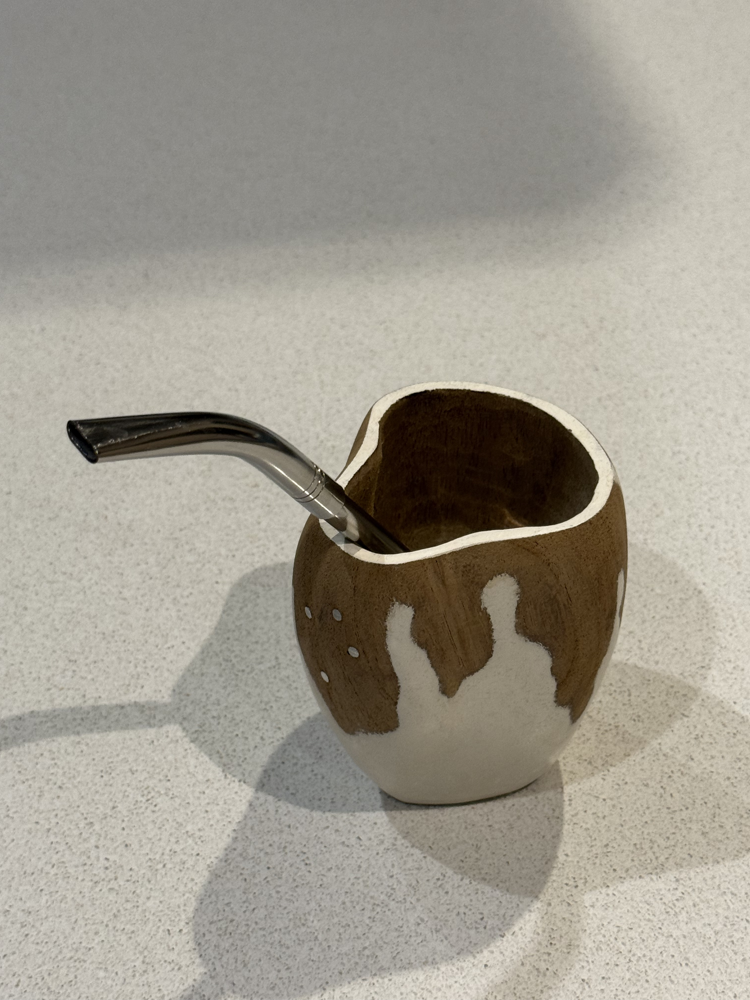
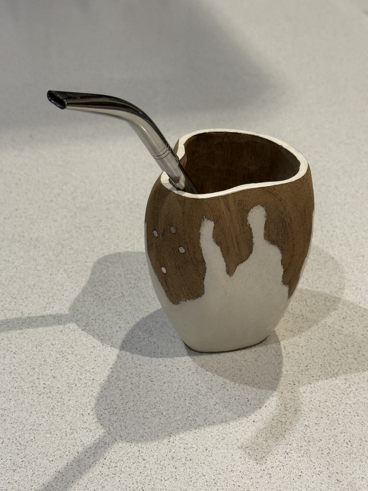
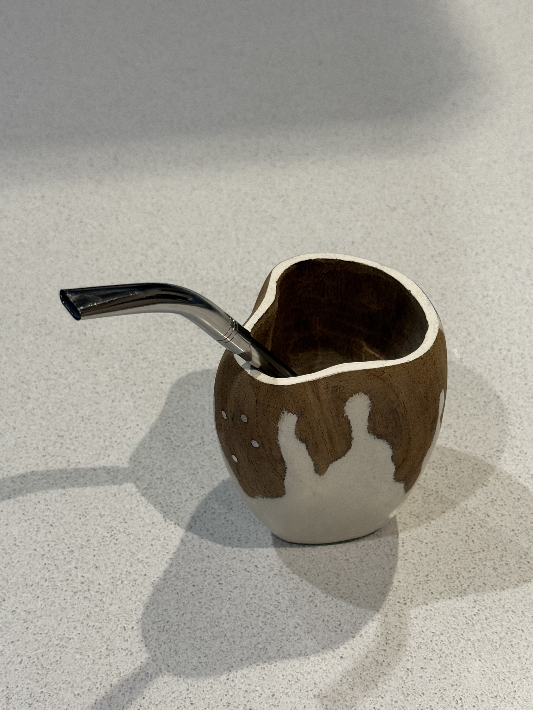

Mate pezuña

- Material: Madera
- Tipo: Pezuña
- Estilo: Rústico
- Uso: Para disfrutar de un buen mate en cualquier momento.
Detalles y características
El típico mate pezuña de vaca de madera tiene un encanto tradicional que me conecta con la esencia más simple del mate.
Su forma y su material lo vuelven cálido, rústico y especial, como esas costumbres que pasan de generación en generación.
Es uno de esos mates que invitan a frenar un rato, compartir una charla tranquila y disfrutar de lo cotidiano.

